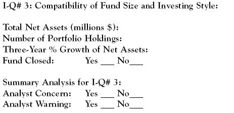

Bigger is not necessarily better when it comes to the size of a mutual fund. The key to investment quality lies in the compatibility of a fund's asset size and its investment style.
Russell Kinnel, editor of Morningstar's Fund investor newsletter, has written (February 13, 2006) that "one of the key challenges for fund investors and fund companies alike is asset growth in mutual funds." A lot of funds are growing, which has prompted an increasing number to close their doors to new investors. Kinnel's research found that during the 2001 - 2005 period the number of $1 billion-plus funds grew from 730 to 1,123. And, among small cap funds, the figure went from 36 to 81.
Size and Style
This so-called "asset bloat" is not much of a problem for bond, index and money market funds, which operate in large market segments that are very liquid and not overly impacted by large block trading transactions. With these funds, bigger is actually better because expenses can be spread over more investment assets. Fund investment advisors have little trouble managing large amounts of money in accordance with the investing objectives of the aforementioned funds.
However, in the case of managed stock funds, it is a different story. Oftentimes, when a fund gets flooded with new money, the investment managers find it difficult to invest expeditiously and/or effectively. As fund assets rise, the number of appropriate new stock prospects shrink, transaction costs increase and maintaining the fund's investment style becomes difficult. (For more insight, read Watch Out For The Mutual Fund Metamorphosis.)
New York Times financial reporter Norm Alster put it this way (December 4, 2005): "When it comes to actively managed equity funds, there appears to be real disadvantages to asset size. As managers have to invest ever larger sums of cash, they face a choice: to buy a wider variety of stocks or to increase positions in stocks they already own." Coming up with new ideas and/or fattening previously established investment positions can be problematic.
That is when fund management decides that it is better to close the fund to new investors to stem the flow. Nevertheless, existing fund shareholders can continue to put new money in and reinvest their dividends and capital gains distributions.
What this means for investors, as well as investment advisers, is that some really top-rated mutual fund investment opportunities have been taken off the table. As a consequence, the search for quality replacements is an ongoing effort.
Asset Size and Small Cap Funds
The problem of asset size is particularly acute in the small cap stock category. There is little doubt that an overly large asset base in this type of fund complicates performance - it may even be damaging. A look at Morningstar's Fund 500 database of 71 small cap value, growth and blend stock funds shows that in 2005, 32 of the 71 funds were closed. Obviously, super-sized asset bases impact negatively on the performance of small-stock funds.
Unfortunately, there's no magic number to tell us what asset size is optimal for a given fund. Kinnel's suggestion is to "let fund managers' decisions guide you." He looked at the median point at which funds closed and came up with these indicators: $800 million for small caps, $3 billion for mid caps and $18 billion for large caps.
Return to the Main Menu.
As a fund investment quality, the asset size issue is really a question of at what point is a fund too big. There is no unequivocal answer for investors to grab onto other than to be aware of the following conditions that accompany a mutual fund as it increases in size:
Investment Quality No. 3
Investment Quality No. 3 relates to a fund manager's recognition that it is prudent to make sure that the size of the fund's asset base is compatible with its investing style. If investment performance suffers, this is a clear indicator that size may be a problem. Ultimately, if there is a size issue, it becomes a matter for management to decide.
The Fund I-Q Scorecard requires you to enter data on a fund's total net assets, its number of holdings, and a three-year asset growth percentage. These numbers are meant to be informative rather than evaluative. They cannot lead you to a reliable answer to the question of how big is too big for the fund you are analyzing. However, they may help to make you more aware of what is happening to the fund's asset base.
Realistically, the best source of guidance on a mutual fund's size is the scrutiny of fund analysts and commentary in the financial press.
Return to the Main Menu.
This is the entry we need to complete in the Fund Investment Quality Scorecard for an analysis of a fund's size and style compatibility:
All the services we are using - Morningstar and Value Line - provide the numbers for historical total net assets, portfolio holdings and an indication of whether the fund is closed. However, only Morningstar's fund report provides any analytical comment on the issue of asset size. The "Morningstar's Take" section will comment on the compatibility of the fund's size and its investing style, if these are worthy of comment. Morningstar will anticipate a size problem, first at a level of "concern". If the problem persists and/or escalates, this can turn into an outright "warning" that the fund should be closed.
Logic tells us that the absence of concern or warning comments is a good sign and indicative of a positive fund investment quality. With this Fund I-Q measurement, no news is truly good news.
{kind=link}